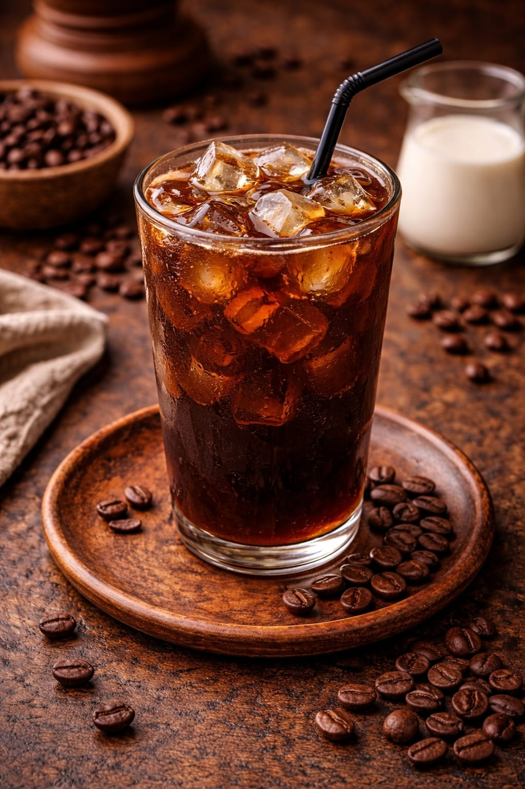

Informações do Café
O café gelado é preparado com café extraído a frio por várias horas, resultando em uma bebida refrescante, menos ácida e muito aromática. Perfeito para dias quentes.
Ingredientes
- café
- Gelo
- Adoçante
Modo de Preparo
Prepare o café coado normalmente, mas com uma concentração maior de pó do que o habitual.
Encha um copo ou jarra com uma quantidade generosa de cubos de gelo.
Despeje o café quente recém-preparado diretamente sobre o gelo. O contraste de temperatura esfria a bebida rapidamente.
Mexa bem e, se desejar, adicione açúcar, leite ou outros ingredientes a gosto.
Preço
- R$ 10,00 a unidade (a partir de 3)
- R$ 11,00 a unidade
Voltar